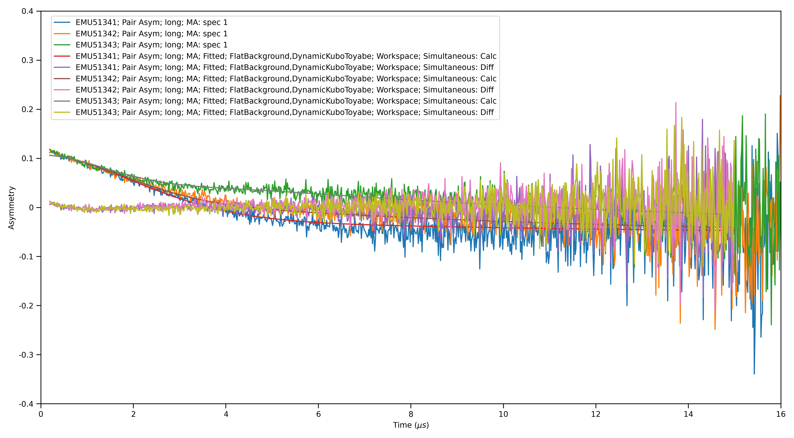

Muon Testing¶
Table of Contents
Preparation¶
For these tests you will be using the files; EMU00051341-51343.nxs for
Ionic Diffusion Test, EMU00020882-20900.nxs for
Superconducting Copper Test, HIFI000134028-13439
for HIFI Transverse Field Simultaneous Fitting, and MUSR62260 for
Transverse Field Asymmetry Test. You will need access to the data
archive for this which can be activated through
manage user directories.
Ionic Diffusion Test¶
Time required 5 - 10 minutes
- Open Muon Analysis (Interfaces > Muon > Muon Analysis)
- Change Instrument to EMU, found in the Home tab
- Load runs
51341-3 - Go to the Fitting tab
- Check the Simultaneous fit over checkbox, and change from Run to Group/Pair
- Right click the empty table area; Select Add Function
- Add a Flat Background (Background > Flat Background)
- Similarly, add DynamicKuboToyabe (Muon > MuonGeneric > DynamicKuboToyabe)
- Check the Global checkbox for the parameters A0, Asym, Delta and Nu
- Set
A0 = 0.05,Asym = 0.15,Delta = 0.2andNu = 0.1 - Click the value for the Field parameter; A
...should appear next to it, click it. A new window should appear - Check the box called Log
- Change the log to be field_danfysik
- Click a row in the table
- Click the Set drop down menu and choose Set all to log
- Do the same but this time choose Fix all, then click Ok
- Click Fit
- Go to the Results tab
- At the bottom of the interface, click Output Results
- A table should appear in the workspaces toolbox called Results Table
- Click on the main Workbench window and open the results table
- Expected Values are (similar to within 50%):
- f0.A0:
-0.0467 - f1.Asym:
0.155 - f1.Delta:
0.389 - f1.Nu:
0.474
- f0.A0:
- Back in the workspaces toolbox, click the workspace group for the fitted, data (Name similar to EMU51341; Pair Asym; long; MA+ …; Fitted; FlatBackground,DynamicKuboToyabe)
- Ctrl + Click all the Workspace 2D data, then right click Plot > Spectrum …
- Choose Plot type Individual and click Plot All
- You should get something like the following plot:

Superconducting Copper Test¶
Time required 5 - 10 minutes
- Open Muon Analysis (Interfaces > Muon > Muon Analysis)
- Change Instrument to EMU, found in the Home tab
- Load run
20889-20900 - Using the > button, step through a couple files (Plot should update each time)
- Go to the Fitting tab
- Right click the empty table area; Select Add Function
- Add ExpDecayMuon (Muon > MuonGeneric > ExpDecMuon)
- Go to the Sequential Fitting tab
- Click Sequentially Fit All
- Go to the Results tab
- In the Log Values table, check run_number and Field_Danfysik
- Click Output Results
- Open the results table by double clicking the table in the workspace toolbox
- Ctrl-Click the field_danfysik and the lambda column
- Right click lambda column, click Plot… and then Line
- You should get something like the following plot:

HIFI Transverse Field Simultaneous Fitting¶
Time required 5 - 10 minutes
- Open Muon Analysis (Interfaces > Muon > Muon Analysis)
- Change Instrument to HIFI, found in the Home tab
- Load runs
134028-39 - Go to the Grouping tab
- In the Pair table, click Guess Alpha
- In the resulting dialog, change the run to
HIFI134034to be used for the calculation - A value close to
1.3should appear
- Go to the Fitting tab
- Check the Simultaneous fit over checkbox, and change from Run to Group/Pair
- Right click the empty table area; Select Add Function
- Add a Flat Background (Background > Flat Background)
- Similarly, add ExpDecayOsc (Muon > MuonGeneric > ExpDecOsc)
- Set all parameters to Global, except Frequency
- Click Fit
- The fit should fail with a large Chi value (
>100) - Now to try the fit a different way.
- Click Undo Fits
- Click the value for the Frequency parameter; A
...should appear next to it, click it. A new window should appear - Enter values for each run in the table as from
0.0to1.1in steps of0.1 - Click Ok
- Click Fit
- This time the fit should work with a significantly lower value for Chi
squared (
<10) - Back in the main workbench window, expand the fitting workspace and pick one of the fitted workspaces
- Double click and with plot type as Individual, click Plot All
- You should get plots that look like this:

Transverse Field Asymmetry Test¶
Time required 5 minutes
- Open Muon Analysis (Interfaces > Muon > Muon Analysis)
- Change Instrument to MUSR, found in the Home tab
- Load run
62260 - Go to the Fitting tab
- Change Select Workspace to workspace containing the fwd in the name
- Right click the empty table area; Select Add Function
- Add GuasOsc (Muon > MuonGeneric > GausOsc)
- Set
Frequency = 1.3 - In the bottom table, check TF Asymmetry Mode to be
true - Click Fit
Single Pulse Test¶
Time required 5 minutes
- Open Muon Analysis (Interfaces > Muon > Muon Analysis)
- Change Instrument to ARGUS, found in the Home tab
- Load run
71799 - Go to the Grouping tab
- click Guess Alpha, should get
0.95
- click Guess Alpha, should get
- Load the next run
- Go to the Fitting tab
- Add a StaticKuboToyabeTimeExpDecay and FlatBackground
- Click the Fit button
- Expected Values are (similar):
- A:
0.13 - Delta:
0.52 - Lambda:
0.11 - A0:
0.07
- A:
Double Pulse Test¶
Time required 5 minutes This users the same sample as the single pulse test
- Open Muon Analysis (Interfaces > Muon > Muon Analysis)
- Change Instrument to ARGUS, found in the Home tab
- Load run
71796 - Set to Double Pulse
- Go to the Grouping tab
- click Guess Alpha, should get
0.93
- click Guess Alpha, should get
- Load the next run
- Go to the Fitting tab
- Add a StaticKuboToyabeTimeExpDecay and FlatBackground
- click the Fit button
- Expected Values are (similar):
- A:
0.12 - Delta:
0.55 - Lambda:
0.13 - A0:
0.09
- A:
- These values are slightly different from the single pulse results
- Load run
71796 - Go to the Home tab
- Change back to Single Pulse
- Untick the Time zero and set the value to 0.493
- Go to the Grouping tab
- Click Guess Alpha, should get
0.91
- Click Guess Alpha, should get
- Load the next run
- Go to the Fitting tab
- Add a StaticKuboToyabeTimeExpDecay and FlatBackground
- Click the Fit button
- Expected Values are (similar):
- A:
0.12 - Delta:
0.59 - Lambda:
0.14 - A0:
0.1
- A:
Possible Prolems¶
- If at any point data cannot be loaded check your manage user directories to see if you have turned on archive search.
- If you cannot see all the runs once you reach the
...step for a simultaneous fit, go back to the Fitting tab and make sure Simultaneous fit over is checked and it is over Group/Pair, not Run